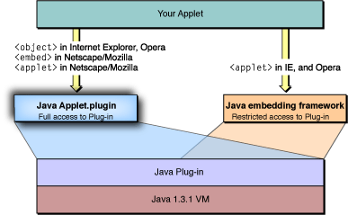

Although Sun encourages the use of the <applet> tag
for all applets, an experienced developer will recognize that this
does not always give you the recommended behavior. For example,
in some browsers, <applet> does
not give you the full functionality of Sun’s Java Plug-in while
the <object> tag,
which is mapped to the mime type application/x-java-applet.,
does. Table 2-1 shows the effect of the <applet> tag
in comparison to the <object> or <embed> tags.
You can see that the suggested <applet> tag
will only have the desired results in the Mozilla/Netscape. To work
around the different usage of the <applet> tag,
you have two options. You can just use the tag listed in Table 2-1 that
invokes the Java Plug-in or you can use Sun’s HTML converter to
get HTML that will work in any browser. This is available at http://java.sun.com/products/plugin/1.3/docs/htmlconv.html
Table 2-1 Interpretation of HTML tags in common Mac OS X browsers
| Browser | <applet> | <object> | <embed> |
|---|---|---|---|
| Internet Explorer 5.2.x (default browser on Mac OS X 10.2) | Java Embedding framework | Java Plug-in | |
| Netscape/Mozilla | Treated as an <embed> tag which
by default maps to maps to the application/x-java-applet Mime
type. |
Java Plug-in | |
| OmniWeb | Java Plug-in | ||
| Opera | Java Embedding framework | Java Plug-in | |
| Chimera | Treated as an <embed> tag. |
Java Plug-in |
| Note: Internet Explorer in Mac OS X version 10.2 may not interperet tags as documented in Table 2-1. The Mac OS X version 10.2 Java Release Notes have more information on this topic. |
Although your applets should continue to function in Mac OS X version 10.2, you might want to modify the HTML that calls them so that they take full advantage of the underlying Java Plug-in as illustrated in “Effect of HTML tags in Mac OS X 10.2”.
Figure 2-1 Effect of HTML tags in Mac OS X 10.2
What will this modification give you? Primarily, it will provide for a better experience for people that use your applets. Changes have been made in the following areas which are discussed below:
Jar Caching
Signed Jar Files
The Java Console
Java Plugin Settings
You can now designate that you want to store certain jar files for repeated use. If you developed for Mac OS 9, you will notice that this is similar to jar caching on MRJ 2.2.x. The cache is stored in the users home folder in Library/Caches/Java. To take advantage of jar file caching, you may need to modify your HTML with the following tags:
Jar files in cache_archive are searched first, then the jar files designated with the ARCHIVE tag are used
Jar file caching in Mac OS X version 10.2 conforms to the Java 1.3.1_03 standard. It does not conform to the Java 1.4 standard. This means that there are certain things you should keep in mind:
<cache_version_ex> parameter
is not supported.<cache_archive> and <cache_version> parameters.Signed jar files work the same as they did in Mac OS X version 10.1. If a user decides to always trust your jar file, a certificate will be stored in the user’s home folder in Preferences/Java Plugin certificates 1.3.1
What has changed is that users may now view their jar file certificates in the Java Plugin Setting application.
The Java Console provides a way to view what is happening
with you applet while it is running. It can give you interactive
thread information and allow you to force garbage collection. The
Java Console is now the display medium for System.out System.err which were
displayed in the Console applications in previous versions of Mac
OS X. Overall, the Java Console provides you a simple way to log
and trace the behavior of your Java applet.
This is a user application that allows users to fine tune how applets behave in Mac OS X. It behaves on Mac OS X such as it does on other platforms. Now that users can adjust settings like the virtual machine size, it important to recognize that settings you set while testing may not be the default settings that users have on their computer. These settings are stored per user in ~/Library/Preferences/com.apple.java.plugin.properties131.